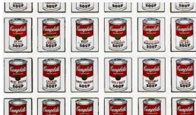
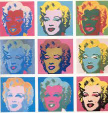

Los serer humanos crecemos y construimos nuestra identidad a lo largo de la vida de forma dinámica en diversas dimensiones, tales como la cognitiva, la biológica, la psicológica, la afectiva, la social y la moral. Reconocer tus emociones, tus gustos, tus pasiones, las personas con quienes convives y tus objetos, son parte de conectar con tu identidad y ello tiene un impacto en tu formación academica y personal.
Una de las corrientes artisticas en el mundo de la pintura es el Pop Art, que nada como un intento de hacer un arte que tomara en cuenta los símbolos "populares"; y comerciales existentes en la cotidianidad de las personas, y haciendo alusión a la cultura del consumismo. Los artistas de esta corriente consideraban que aun los objetos cotidianos, de la cultura de masas, podian tener elementos de belleza. Su estrategia era tomar los objetos y descontextualizarlos. Por ejemplo, Andy Warhol, uno de los iconos de esta tendencia artistica, represento en una obra la sopa Campbell's, que le gustaba desayunar todos los dias; era tanto su gusto por ella que decidió representarla con sus colores originales y también realizó) otras obras variando sus colores. Estos trabajos artísticos sin duda lograron expresar su gusto y su identidad, haciendo tendencia en el mundo de las artes. Tambien realizó un conjunto de fotos con el rostro de Marilyn Monroe, quien era una de sus artistas favoritas.
 